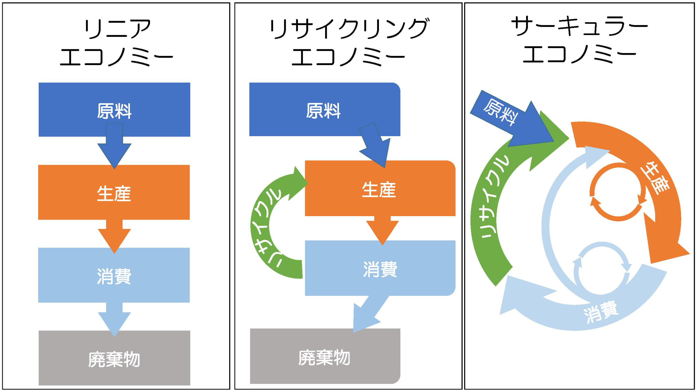
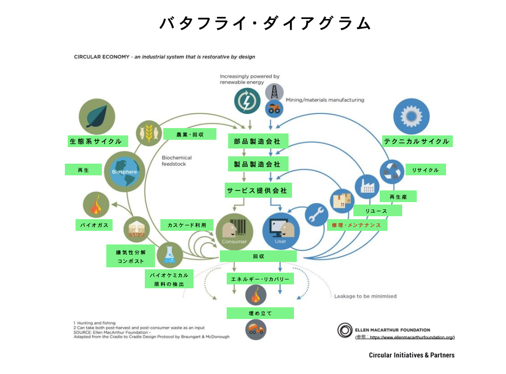
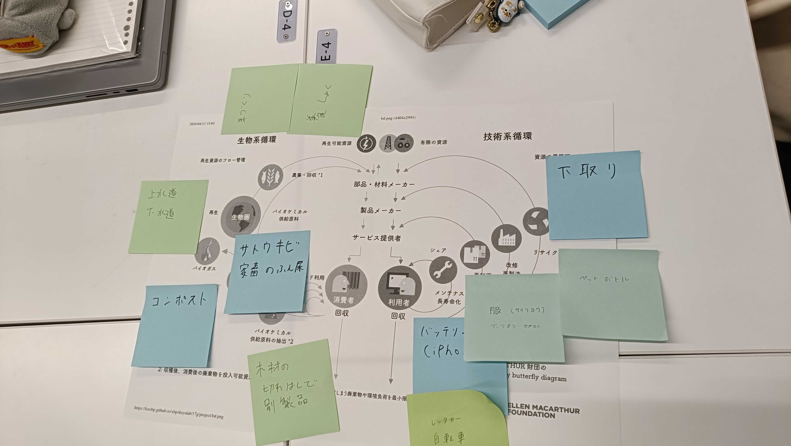

サーキュラーエコノミーとは

参考元
サーキュラーエコノミーとは
昔はリニアエコノミーを行っていたが、一方通行で環境に悪い。
そこで誕生したサーキュラーエコノミーで廃棄物をそもそも出さないようにしましょうというやつ。
横浜市はサーキュラーエコノミーを推進している なんかイベントがあるらしい
サーキュラーエコノミーを考える上で大事なことが
「バタフライダイアグラム」

参考元
左は生物系のリサイクル 地面から上
再生可能 無くなるまで繰り返し使う
右は技術系の循環 地面から下
資源は有限である。 石油系や鉱物など。レアメタルなど
うまく循環を回さなければならない。
・できるだけ長く使う・再利用する など
羽の外側の方が地球にエネルギーをかけてしまう。なので内側の循環をできるように目指しましょうね！となっている
シェアリング→所有権は渡さないでも使用権は渡す。
モノは消費じゃない。利用しているから利用者。
捨てるを戻すに考えるのがサーキュラーエコノミー
グループで話あったこと

私たちの班では画像のような意見がでました。
印象に残った話としては、なぜそれを利用しないのかという話題で私たちの班は
・レンタルだと傷など負ってしまいそうで気をつかう、返すのがめんどい、または場所がない。
という意見や
中古品で気になる人もいれば、中古でも気にしないひとがいる。その人次第になってしまう。
などの意見がでました。